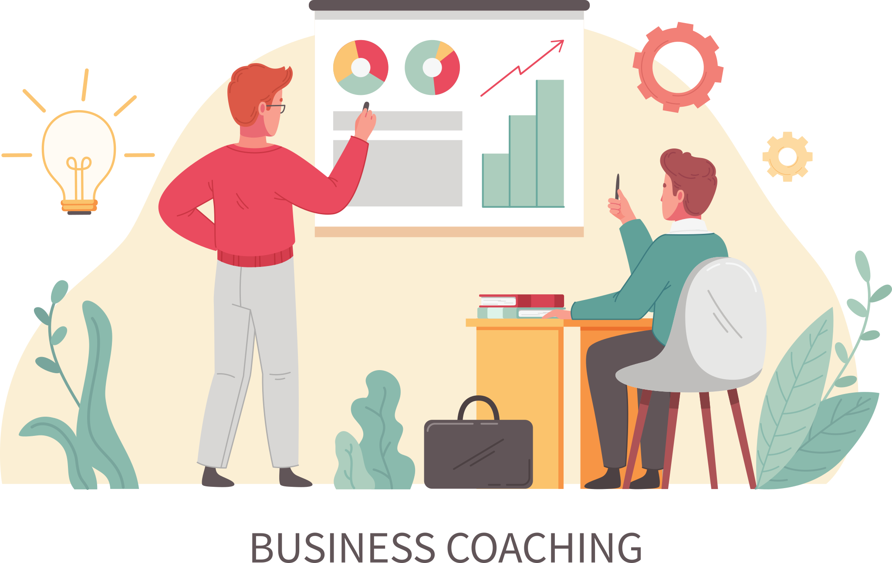

Key Elements of High-Converting Coaching Websites
I help entrepreneurs and business owners gain clarity, scale their operations, and achieve measurable growth. Through real client success stories, testimonials, and a proven track record, I build trust and demonstrate the results you can expect. I share practical, educational content designed to give you actionable insights and strategies you can apply right away. To support your growth, I offer valuable resources like free guides and mini-courses, helping you move forward with confidence. When you're ready to take the next step, you can easily book a discovery call or get in touch to start building a stronger, more profitable business.

This platform is designed for entrepreneurs and business owners seeking clarity, sustainable growth, and measurable results. It brings together proven strategies, real-world insights, and practical guidance to help navigate challenges and unlock new opportunities. Through educational content, case studies, and success stories, visitors gain valuable perspectives and actionable steps they can apply immediately. Additional resources such as free guides and mini-courses support ongoing learning, while a streamlined booking and contact process makes it easy to take the next step toward building a stronger, more profitable business.